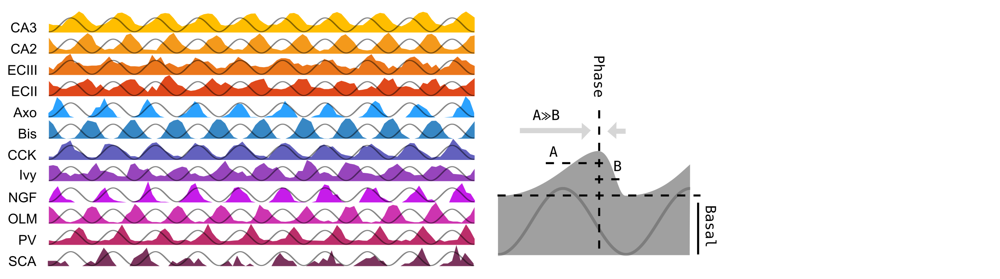

LCNhm_class¶
This script shapes the class from which our neurons will be built.
Neurons will have the following attributes:
- MorphoName: Morphology name, it must be one of the following: n128, sup1, n409 or n127
- MorphoData: Dataset containing all the morphological data
- SomaList: List of NEURON somatic
Sections - AxonList: List of NEURON axonic
Sections - DendList: List of NEURON Basal dendritic
Sections - ApicList: List of NEURON apical dendritic
Sections - SomApicList: List of somatoapical NEURON apical dendritic
Sections - SectionsList: List of all NEURON
Sections, the union ofSomaList,AxonList,DendList,ApicList - TopolDict: Dictionary with all topological information in the form
- CurrentObject: List of NEURON objects containing all current clamps information
Access to all these properties is possible by:
Eg.:
>>> Pyramidal = neuron_class(MorphoName = CELLPROP_MORPHOLOGY,
IntrinsicFactors = IntrinsicFactors,
SynapticFactors = SynapticFactors,
CurrentFactors = CurrentFactors,
DirLocation = DIR_LOCATION )
>>> print Pyramidal.MorphoName
sup1
The way the neuron is built is following these steps:
- Import and set morphological data from ./LCNhm-neurondata/
CELLPROP_MORPHOLOGY.swc These .swcs cointain information about the 3D structure and width of the cell.
You can obtain more morphologies on the public databas NeuroMorpho
Classification into four main morphological categories (soma, axon, basal and apical dendrites).
Every category will be compartimentalized in multiple sections, each of which will have different and specific ion channels, synaptic inputs, diameter, spines, etc… For instance, one apical dendrite that starts on the somatoapical trunk, will be compartimentalized in 10 sections, where the nearest section to the trunk will be thicker than the furthest.
- Import and set morphological data from ./LCNhm-neurondata/
- Set biophysics (ion channels, membrane capacitance, membrane resistivity, etc…)
What ion channels to use can be chosen, as well as a factor to increase/decrease the conductance density.
See
LCNhm_configurationfile.CELLPROP_INTRINSIC_IONCHSandLCNhm_configurationfile.CELLPROP_INTRINSIC_EXPERIMENT: for further details.
- Set synapses (excitatory/inhibitory inputs, place of synaptic boutons, maximum conductance, etc…)
Synaptic inputs can be chosen, as well as a factor to increase/decrease the maximum conductance.
See
LCNhm_configurationfile.CELLPROP_SYNAPTIC_INPUTSandLCNhm_configurationfile.CELLPROP_SYNAPTIC_EXPERIMENT: for further details.
- Set current clamp (place, duration, intensity, etc…)
A square-pulse clamp is set according to parameters written in LCNhm_configurationfile.
See
LCNhm_configurationfile.CURRENT_DURATION,LCNhm_configurationfile.CURRENT_DELAY,LCNhm_configurationfile.CURRENT_AMPLITUDES,LCNhm_configurationfile.CURRENT_SECTION,LCNhm_configurationfile.CURRENT_LOCATION, for further details.
-
class
LCNhm_class.neuron_class(MorphoName, IntrinsicFactors, SynapticFactors, CurrentFactors, DirLocation)¶ Neurons will be built as neuron_class objects.
Parameters: - MorphoName (String) –
Morphology name, it must be one of the following: n128, sup1, n409 or n127
Defined in
LCNhm_configurationfile.CELLPROP_MORPHOLOGY - IntrinsicFactors (List) –
List of all current properties
Defined in
LCNhm_main.IntrinsicFactors - SynapticFactors (List) –
List of all intrinsic properties
Defined in
LCNhm_main.SynapticFactors - CurrentFactors (List) –
List of all synaptic properties
Defined in
LCNhm_main.CurrentFactors - DirLocation (String) – Precise location of the main directory
Returns: ``neuron_class`` object
Return type: Class object
-
MorphoName¶ String – Morphology name, it must be one of the following: n128, sup1, n409 or n127
Defined in
LCNhm_configurationfile.CELLPROP_MORPHOLOGYIt is one of the
neuron_classinputs
-
MorphoData¶ csv – Dataset containing all the morphological data
- It describes each morphological point with six parameters:
Type: soma (1), axon (2), Basal (3) or apical (4) dendritex,y,z: Spatial coordinates (in micrometers)d: diameter (in micrometers)IDFather: Line number of the morphological point to which is connected
See
make_geometry_dictionary()to see how it is usedSource file in ../LCNhm-neurondata/ <MorphoName> .swc
-
SomaList¶ List – List of NEURON somatic
SectionsThe number of
Sectionsis derived fromMorphoData
-
AxonList¶ List – List of NEURON axonic
SectionsThe number of
Sectionsis derived fromMorphoData
-
DendList¶ List – List of NEURON Basal dendritic
SectionsThe number of
Sectionsis derived fromMorphoData
-
ApicList¶ List – List of NEURON apical dendritic
SectionsThe number of
Sectionsis derived fromMorphoData
-
SomApicList¶ List – List of somatoapical NEURON apical dendritic
SectionsList can be found in ./LCNhm-neurondata/somatoapical_sections.txt
-
SectionsList¶ List – List of all NEURON
Sections, the union ofSomaList,AxonList,DendList,ApicList
-
TopolDict¶ Dictionary –
Dictionary with all topological information in the form
[ [ SecListName[SecNumber] , Who is connected to (IDFather) , x , y , z ] ] , […], … ]Eg.:
# NEURON object name ID of father x y z TopolDict = { SomaList[0]: ['SomaList[0]', -1, 0, 0, 0], SomaList[1]: ['SomaList[1]', ID of SomaList[0], 0, 0, -2], ... ApicList[9]: ['ApicList[9]', ID of ApicList[2], 0, 0, -1000]}
-
CurrentObject¶ List –
List of NEURON objects containing all current clamps information
[[ Clamp object 1, Duration 1, Delay 1, Amplitude 1 ], [ Clamp object 2, Duration 2, Delay 2, Amplitude 2 ], […], …… ]Eg.:
# Object dur del amp CurrentObject = [ [ NEURON object at soma, 100, 0, 0], [ NEURON object at soma, 200, 300, 0], ... [ NEURON object at soma, 200, 1200, 0]]
-
init_sections(MorphoData)¶ Initialization and group in lists of the four main class of sections: soma, axon, Basal (dend) and apical (apic) dendrites
Parameters: MorphoData (csv) – neuron_class’sMorphoDataattribute: Dataset containing all the morphological data- It describes each morphological point with six parameters:
Type: soma (1), axon (2), Basal (3) or apical (4) dendritex,y,z: Spatial coordinates (in micrometers)d: diameter (in micrometers)IDFather: Line number of the morphological point to which is connected
See
make_geometry_dictionary()to see how it is usedSource file in ../LCNhm-neurondata/ <MorphoName> .swc
Returns: - SomaList (List) – class:neuron_class’s
SomaListattribute: List of NEURON somaticSectionsThe number of
Sectionsis derived fromMorphoData - AxonList (List) – class:neuron_class’s
AxonListattribute: List of NEURON axonicSectionsThe number of
Sectionsis derived fromMorphoData - DendList (List) – class:neuron_class’s
DendListattribute: List of NEURON Basal dendriticSectionsThe number of
Sectionsis derived fromMorphoData - ApicList (List) – class:neuron_class’s
ApicListattribute: List of NEURON apical dendriticSectionsThe number of
Sectionsis derived fromMorphoData - SomApicList (List) – class:neuron_class’s
SomApicListattribute: List of somatoapical NEURON apical dendriticSections.List can be found in ./LCNhm-neurondata/somatoapical_sections.txt.
-
make_geometry_dictionary(CellPosition, MorphoData)¶ Make a legible dictionary from the swc
MorphoDatadatabaseParameters: - CellPosition (List of Floats) –
List of four elements
- x-, y-, z-: spatial position of the soma (in micrometers)
- angle: self-rotation around its main axis (in degrees)
- MorphoData (csv) –
neuron_class’sMorphoDataattribute: Dataset containing all the morphological data- It describes each morphological point with six parameters:
Type: soma (1), axon (2), Basal (3) or apical (4) dendritex,y,z: Spatial coordinates (in micrometers)d: diameter (in micrometers)IDFather: Line number of the morphological point to which is connected
See
make_geometry_dictionary()to see how it is usedSource file in ../LCNhm-neurondata/ <MorphoName> .swc
Returns: TopolDict –
neuron_class’sTopolDictattribute: Dictionary with all topological information in the form[ [ SecListName[SecNumber] , Who is connected to (IDFather) , x , y , z ] ] , […], … ]
Eg.:
# NEURON object name ID of father x y z TopolDict = { SomaList[0]: ['SomaList[0]', -1, 0, 0, 0] SomaList[1]: ['SomaList[1]', ID of SomaList[0], 0, 0, -2], ... ApicList[9]: ['ApicList[9]', ID of ApicList[2], 0, 0, -1000]}
Return type: Dictionary
- CellPosition (List of Floats) –
-
set_current_clamp(CurrentFactors)¶ Set current clamp
Parameters: CurrentFactors (List) – neuron_class’sLCNhm_main.IntrinsicFactorsinput: List of properties for all desired current pulses-
List of durations of each current pulse in milliseconds
List of delays of each current pulse in milliseconds
List of amplitudes of each current pulse in nanoampers (nA)
List of sections of each current pulse
List of location along the defined
LCNhm_configurationfile.CURRENT_SECTIONof each current pulse
Their length must be the same, the number of different current clamps
Click any of the links for further information
Returns: CurrentObject – neuron_class’sCurrentObjectattribute: List of NEURON objects containing all current clamps information[[ Clamp object 1, Duration 1, Delay 1, Amplitude 1 ], [ Clamp object 2, Duration 2, Delay 2, Amplitude 2 ], […], …… ]Eg.:
# Object dur del amp CurrentObject = [ [ NEURON object at soma, 100, 0, 0], [ NEURON object at soma, 200, 300, 0], ... [ NEURON object at soma, 200, 1200, 0]]
Return type: List
-
set_geometry(TopolDict)¶ Set the topology and geometry from the
TopolDictdictionary.- First, the beginning of each
Sectionis connected to the end of its “father”Section, defined in theMorphoDatacsv - Second, it sets each compartment position and diameter
Parameters: TopolDict (Dictionary) – neuron_class’sTopolDictattribute: Dictionary with all topological information in the form[ [ SecListName[SecNumber] , Who is connected to (IDFather) , x , y , z ] ] , […], … ]Eg.:
# NEURON object name ID of father x y z TopolDict = { SomaList[0]: ['SomaList[0]', -1, 0, 0, 0] SomaList[1]: ['SomaList[1]', ID of SomaList[0], 0, 0, -2], ... ApicList[9]: ['ApicList[9]', ID of ApicList[2], 0, 0, -1000]}
- First, the beginning of each
-
set_intrinsic_properties(IntrinsicFactors)¶ Set intrinsic properties: set axial resistance, fill the neuron’s surface with ion channels, and set their dynamical parameters
Final factors are defined as the multiplication of the individual factor by the experiment factor, so that
FinalFactors = FactorsIndividual * FactorsExperiment fNa, fA, fAHPs, fC, fKDR, fM, fCaL, fCaT, fHCN, fL, Ra = FinalFactors
It is crucial to set the individual and experiment factors in the required order
Parameters: IntrinsicFactors (List) – neuron_class’sLCNhm_main.IntrinsicFactorsinput: List of all intrinsic propertiesLCNhm_configurationfile.CELLPROP_INTRINSIC_IONCHS: Ion channels to include in the cellLCNhm_configurationfile.CELLPROP_INTRINSIC_EXPERIMENT: Additional factor multiplying the following maximum conductances and axial resistanceLCNhm_configurationfile.CELLPROP_INTRINSIC: Number of the intrinsic genetic-algorithm individual
-
set_synaptic_properties(SynapticFactors)¶ Set synaptic properties written in ../LCHhm-neurondata/synaptic_properties.txt (Bezaire2016)
Each line of the file has a list of all the necessary properties to configure synapses. Let’s take a line as an example:
Eg.: (1) CA3 (2) 6209 (3) 4 (4) 50 (5) 300 (6) 1.5 (7) 0 (8) 0.5 (9) 3 (10) 0.0002 (11) 0.5 (12) 276 (13) 5 (14) 3These parameters are, in order:
- Name of input.
- Eg.: CA3
- Number of NumBoutons.
- Eg.: 6209
- Type of
Sectionswhere to place NumBoutons. - Eg.: 4, that is apical dendrites
- Type of
- Minimum distance to soma (positive to apical, negative to Basal).
- Eg.: 50 um from soma, that would be proximal SR
- Maximum distance to soma (positive to apical, negative to Basal).
- Eg.: 300 um from soma, that would be distal SR
- Firing frequency (Hz).
- Eg.: 1.5 Hz
- Reversal potential (mV). Near 0mV would correspond to a glutamatergic input, while a -70mV to a GABAergic one.
- Eg.: 0 mV, that is excitatory
- Raising time constant (ms).
- Eg.: 0.5 ms
- Decaying time constant (ms).
- Eg.: 3.0 ms
- Maximum conductance (microsiemens, uS). This is later multiplied by the
FinalFactorsdefined from theFactorsIndividualand theExperimental. - Eg.: 0.0002 uS
- Maximum conductance (microsiemens, uS). This is later multiplied by the
- Basal firing of the synaptic time probability distribution.
- Eg.: 0.5
- Theta Phase of maximum spiking probability.
- Eg.: 276 deg
- Left-shifting factor of the synaptic time probability distribution (A in the picture).
- Eg.: 5
- Right-shifting factor of the synaptic time probability distribution (B in the picture).
- Eg.: 3
The last four parameters define the synaptic time probability distribution through the
LCNhm_functions.synaptic_time_probability_distribution(), an asymmetric gaussian function. An example of the synaptic time probability distribution alon 10 theta cycles, and a visual definition of theBasal,AandBparameters are shown in the image:In the case that
LCNhm_configurationfile.SIMPROP_THETA_MODE()isFalse, the distribution will be homogeneous along time, being (6), the firing frequency, the only parameter that will be taken into account.So for each excitatory/inhibitory input:
- An amount of (2) boutons are placed randomly along the neuron surface from (5) to (6)
- Synapse internal dynamics are set given (7), (8), (9), (10) and (11)
- Synapses are activated randomly with the probability distribution given by
LCNhm_functions.synaptic_time_probability_distribution()
Final factors are defined as the multiplication of the individual factor by the experiment factor, so that
FinalFactors = FactorsIndividual * FactorsExperiment fNa, fA, fAHPs, fC, fKDR, fM, fCaL, fCaT, fHCN, fL, Ra = FinalFactors
It is crucial to set the individual and experiment factors in the required order
Parameters: SynapticFactors (List) – LCNhm_configurationfile.CELLPROP_SYNAPTIC_INPUTS: Synaptic inputs to include in the cellLCNhm_configurationfile.CELLPROP_SYNAPTIC_EXPERIMENT: Additional factor multiplying the following maximum conductancesLCNhm_configurationfile.SIMPROP_THETA_MODE: Set theta (True) or not (False)LCNhm_configurationfile.SIMPROP_THETA_PERIOD: Theta period in millisecondsLCNhm_configurationfile.SIMPROP_START_TIME: Lapse of time before starting the simulation in millisecondsLCNhm_configurationfile.SIMPROP_END_TIME: Total duration of the simulation in milliseconds (LCNhm_configurationfile.SIMPROP_START_TIME+LCNhm_configurationfile.SIMPROP_SIM_TIME)
Returns: - SynDict (Dictionary) – Dictionary with information of all synapses. For each input in
LCNhm_configurationfile.CELLPROP_SYNAPTIC_INPUTS,SynSection: NEURONSectionandLocationfor each boutonSynPlaces: Three spatial coordinates for each boutonSynTimes: Time releases for each bouton
is stored
- SynObjects (List) – NEURON synaptic
Exp2Synobjects (go to Exp2Syn for more information) - NetConObjects (List) – NEURON synaptic
NetConobjects (go to NetCon for more information)
- MorphoName (String) –